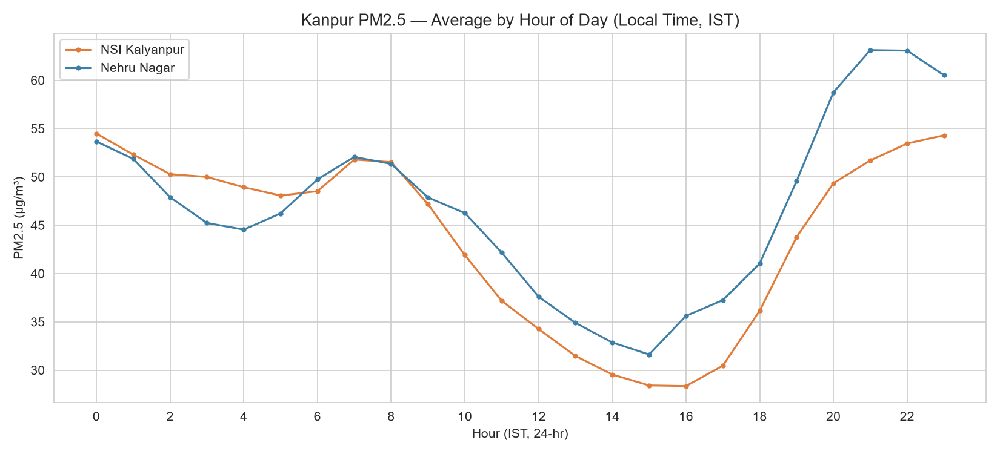
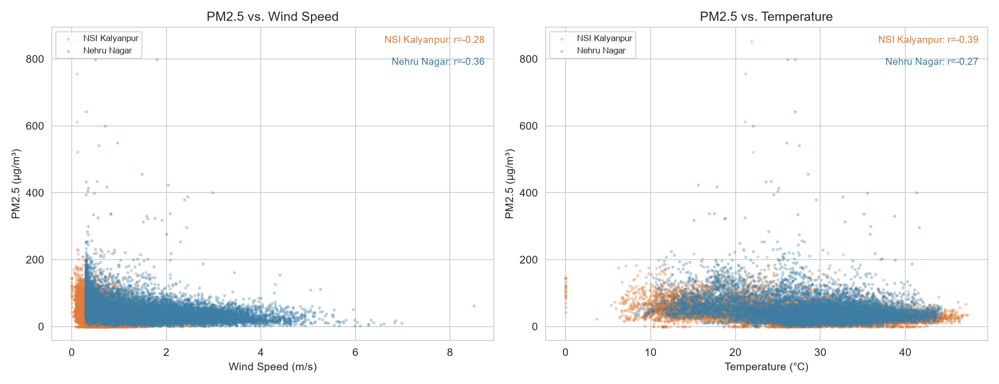
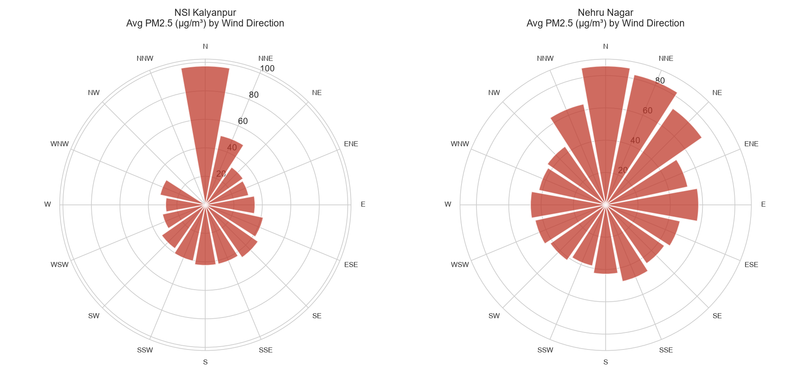

1. Multi-Year Timeseries & The Reporting Gap
The continuous particulate records from both NSI Kalyanpur (Station ID: 229252) and Nehru Nagar (Station ID: 5662) show recurring severe winter peaks, with PM2.5 exceeding the National Ambient Air Quality Standard (NAAQS) 24-hour limit of 60 µg/m³ during post-monsoon and winter seasons.
 Source: CPCB / UPPCB telemetry via OpenAQ v3 API
Source: CPCB / UPPCB telemetry via OpenAQ v3 API
2. Monthly Seasonality: The Five-Fold November Surge
As illustrated in Figure 2, particulate levels follow a stark seasonal cycle. The lowest concentrations occur during the monsoon month of August, where frequent precipitation washout and high atmospheric boundary layers keep monthly average PM2.5 between 16.4 µg/m³ and 22.1 µg/m³. In contrast, November PM2.5 averages climb to 90.2–94.8 µg/m³—representing a roughly five-fold multiplication over the summer baseline at both stations independently.
 Source: 02_monthly_seasonal.png generated from daily_aggregated.csv
Source: 02_monthly_seasonal.png generated from daily_aggregated.csv
3. Air Quality Index Category Breakdown
Evaluating compliance under the CPCB National Air Quality Index framework (Figure 3), approximately 6% of valid monitored station days crossed into the "Poor" (AQI 201–300) or "Very Poor" (AQI 301–400) categories. Moderate and satisfactory days dominate during the monsoon and pre-monsoon periods, but are almost entirely absent in November and December.
 Source: 03_aqi_breakdown.png
Source: 03_aqi_breakdown.png
4. Diurnal 24-Hour Cycle & Boundary Layer Dynamics
Hourly diurnal profiling (Figure 4) demonstrates that particulate concentrations are heavily governed by atmospheric boundary layer height. PM2.5 reaches its daily minimum in mid-afternoon (~3:00–4:00 PM IST), when solar radiation drives maximum convective vertical mixing. Following sunset, radiative ground cooling creates a shallow surface inversion layer, trapping localized vehicular and domestic combustion emissions and driving peak concentrations between 9:00 PM and 10:00 PM IST.

Source: diurnal_pattern.csv5. Meteorological Correlations & Upwind Directionality
Statistical correlation analysis (Figure 5 & Figure 6) confirms that PM2.5 is negatively correlated with wind speed (r = -0.28 to -0.36) and temperature (r = -0.27 to -0.39). Stagnant, cold conditions systematically prevent horizontal ventilation and vertical dispersion.
Furthermore, directional wind rose analysis (Figure 7) indicates that both stations independently register their highest mean particulate concentrations when wind advects from the northern sector—highlighting transboundary regional transport along the Indo-Gangetic corridor.
 Source: 05_correlation_heatmap.png
Source: 05_correlation_heatmap.png

Source: 06_scatter_weather.png
Source: 07_wind_rose.png